You are here: Home → Advanced Rigging
Advanced Rigging
Setup
Today we are going to be rigging a bipedal character. After this tutorial, you should be able to apply these basic concepts to many different characters of various shape and form. The bipedal character we'll be using is blobber(he's a bit blobby). Download him from the link and make sure to place him in your UCBUGG Lab(or equivalent) project.
Now open up Maya, set your project to UCBUGG Lab, open up blobber from your scenes directory... you know the drill.
Let's get started on rigging!
If you just said "Wait, don't I have to freeze transform and delete history from a model before I rig?", I must say, you have learnt well. Usually when a modeler hands off a model to a rigger those things will all be taken care of. But, to make a pointmake your lives miserable I intentionally left that out. So make sure you apply Modify->Freeze Transformations and Edit->Delete All by Type->History on the model. Also if there are any leftover transformation histories delete them as well. If you don't remember what these are, refer to the Basic Rigging lab.
Your outliner should end up looking like this:
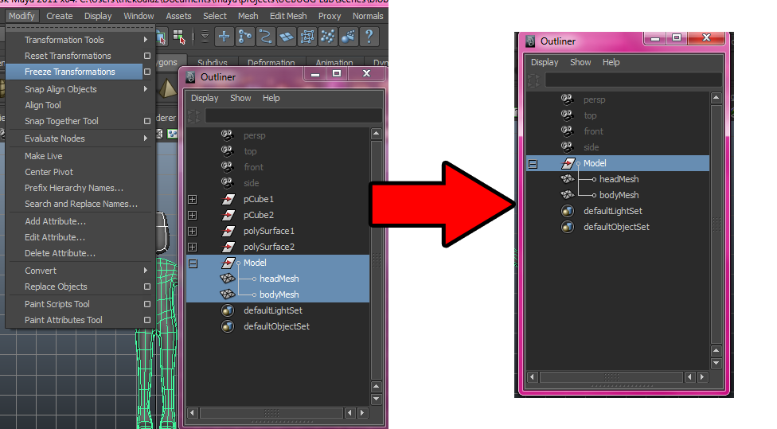
Camera view
This section is an optional section to help with your workflow. You don't have to do it.
Remember the four-view and single-view mode we alwyas worked on? Well, surprise! Maya lets you customize this to a great degree.
For rigging, I personally like to be in the two panes arrangement with front and side views. (In general you want to be working in the orthographic views for rigging.)
To do this, go to Window->View Arrangements->Two Panes Side by Side.
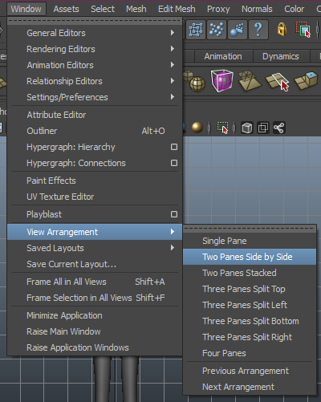
now that you have a split-screen arrangement. Let's go to the panels menu and change the panels to front and side.
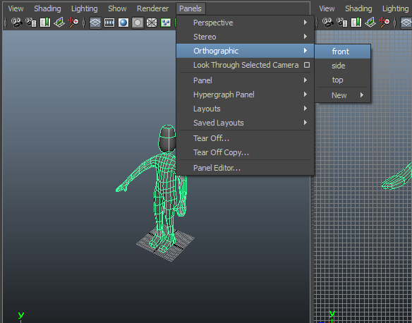
You should end up with a view like this:
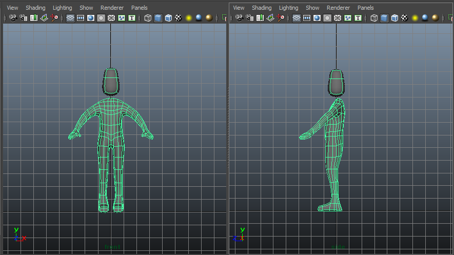
This is just a workflow tip and is not essential to rigging (also depends on your personal preference), but hey, you learnt something new about Maya's User Interface today!
Rigging the Legs
Okay. Finally to rigging. So this is a very similar process to the lamp model we did last week. If you feel like I'm going a little fast, make sure you fully understand the basic rigging lab.
Just so we can see the joints we're placing, make sure X-Ray Joints are on. If your joints are coming out too small, increase the radius of that joint in the channel box.
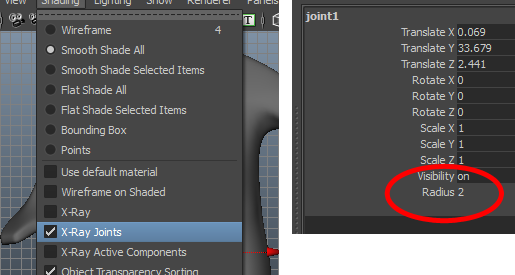
So the most important joint, is the one we start with. You would put this on the pelvis of a bipedal character, and name it Center Of Gravity or cog.
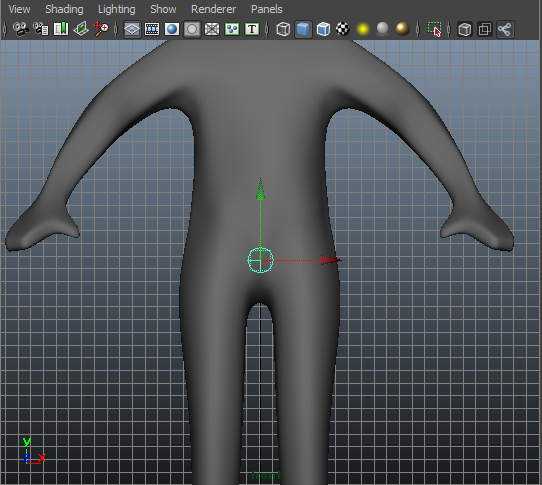 Check both the front and side views as to make sure that it's around the pelvis.
From there, we're now going to stem the leg. Place joints on the hip, knee, ankle, ball of the foot, and then an extra one right outside the toes like the following picture.
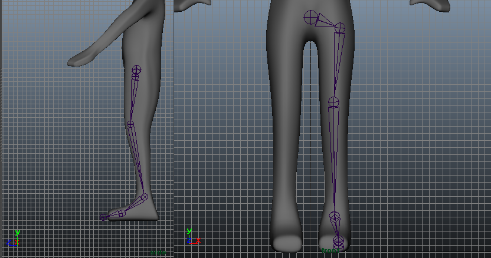
If you've noticed, whenever you move a joint, all the joints down the hierarchy move as well. If you want to avoid this, hold d and move the joint. Remember how you can move the pivot of any object by holding d? Well, a joint is its pivot, and that's why this works! Logical, eh?
Make sure you see both views and the joints are where the rotation pivot should be. Try moving and kicking your leg and see if you can figure out where your bones pivot around.
If you're thinking "Oh gosh I should name these.", I am so proud of you! Let's go to the outliner and name them. This is just how I named them:
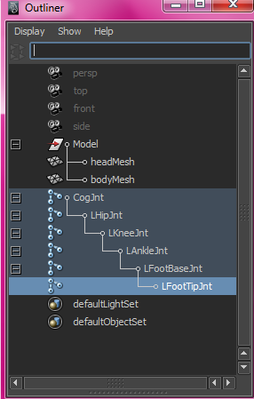
So we have one leg rigged... great. We could repeat this for the other leg, but that would be tideous right? Maya gives us a great tool called Skeleton->Mirror Joints that you can use. Select your LHipJnt(And just your LHipJnt), or your equivalent name. And select the option box for Skeleton->Mirror Joints. If you've named your joints consistently dpeending on which side of the body they're in, you can also make Maya rename your joints to the other side too!(R->L or Right->Left or vice-versa) Finally, make sure you select Orientation as the mirror function instead of Behavior.
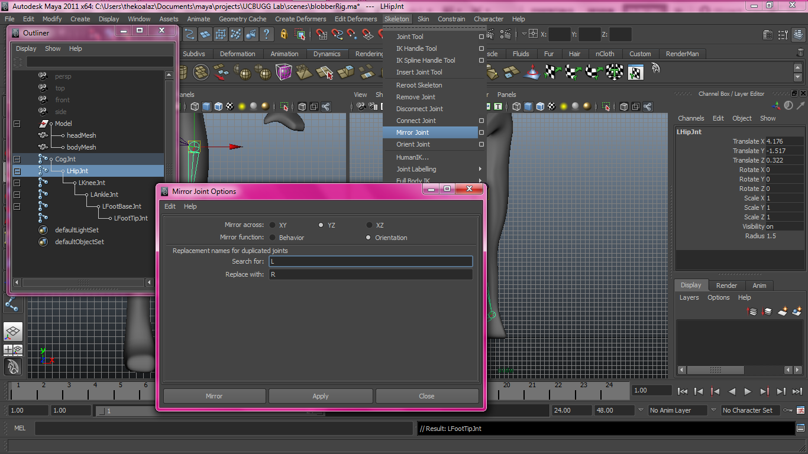
Hit mirror, and voila! Aren't computers great?
Rigging the Upper Body
Now we're moving on to the spine. Lets get started without delay.
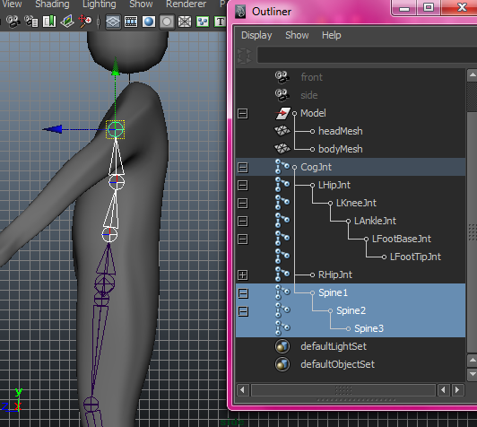
This is how I put my spine joints: 3 spine joints But again, try figuring out where you feel your spine has the biggest movements your character must have. Also think about what your spine actually looks like, as we're trying to emulate a human skeleton/muscle system.
If you're wondering how you can continue to append newly created joint hierarchies, remember that joints are all in a parent child relationship! So just MMB-Drag your child joint into the parent joint and the connection will be automatically created! (e.g. Spine1 into Cog)
For the arms, I recommend a clavicle, shoulder, elbow, wrist, fingerbase, and fingertip (If you want you can add rigs for the thumbs too). Just as we did for the legs, lets mirror joints with the same options (Make sure they are the same options as above.), and we have the upper body pretty much done!
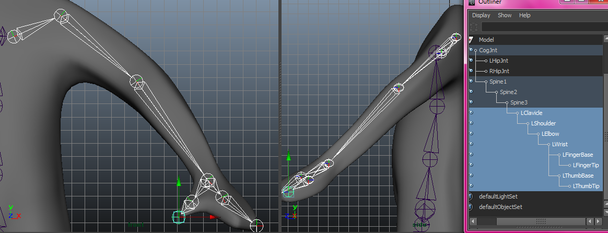
My character has an extremely simple head, and barely a face so we're going to create a simple rig to match.
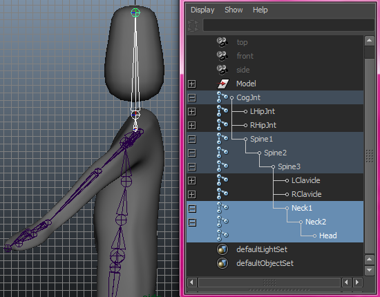
Some Cleanup and Testing
Remember the cleanup work we did after rigging the lamp? Well, it's that time again!
Regarding joints, using Orient Joints to properly set the rotation axis is usually all you need so that's done. Easy! Check back with the basic rigging lab to see how to use this tool.
Now let's do some real testing with the rig.
If you select your CogJnt(which selects the whole joint hierarchy) and your bodyMesh, and then use Skin->Bind Skin. This will now bind your skeleton to your mesh! Test it out by rotating the joints.
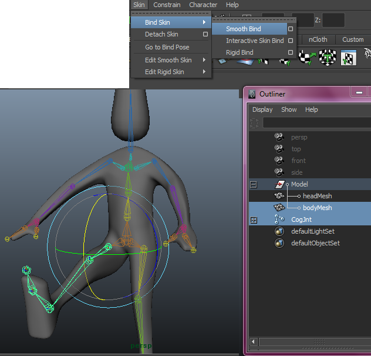
Yay! We have a basic bipedal rig working!
For the head, lets just use the simple and trustworthy parent constraint. Select the somewhat awkward HeadJnt on the top and then your headMesh, and just parent constraint them, just like how we did in the previous lab. Now when you rotate neck2, you should have the head moving. YAY!
But we're not done yet. We can still add more functionalities and also controllers. Undo the movement and let's add IK Handles!
IK Handles
Remember IKs? They made certain actions like making the base fold easier when controlling the lamp right? We're going to do a very similar thing with this character as well.
So select your Skeleton->IK Handle Tool and click your LHipJnt And LAnkleJnt. Name the IKHandle1 as LFootIK and also, if you can find it(think/remember where it would be!), name effector1 to LFootIKEffector.
Now lets repeat this for the right foot, the left hand, and the right hand. All in all it should look like this:
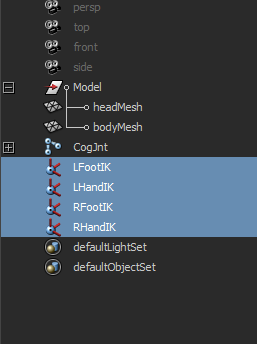
Controllers
We've visited controllers last week in basic rigging, and we're pretty much going to follow the same steps:
- Create a NURBS circle.
- Name it LFootCtrl, or the equivalent name for the IK you're controlling.
- IMPORTANT: Freeze Transform it.
- Parent the IK Handle to the Controller.
- Repeat for all IK Handles.
That gives us the basic controllers for the IK! Play around with it and see it work.
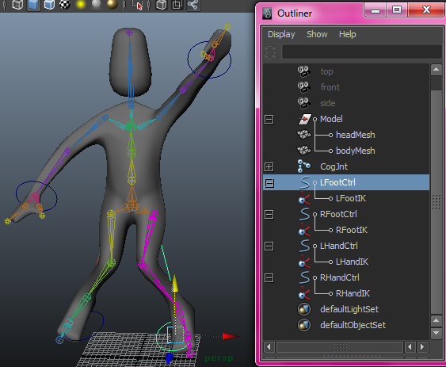
Now remember to control the joint at the same time, we also need to orient constraint the joint to the controller. So let's do that!
- IMPORTANT: Bring your controller back to it's default position. If you remembered to Freeze Transform it, this is simple as putting all your controllers attributes in the channel box to 0.
- Select your controller. LFootCtrl
- Select your joint. LAnkleJnt
- Use Constraints->Orient (Make sure maintain offset is checked in the option box!
- Repeat for all Controllers.
You might think this part is a bit tedious, and unfortunately, rigging is like that unless you are familiar with scripting and are willing to set up an automated system. At least our biped only has four limbs! Imagine if you were rigging an alien with 8 arms!
Bear with me for just one more controller now: The Head.
- Create a NURBS Circle and name it HeadCtrl.
- Put it around the head like halo.
- Then move the HeadCtrl's pivot down to where the neck2 joint is located.
- Make sure you Freeze Transformation!
- Select the HeadCtrl, then the neck2 joint, and orient constraint!
As the head is only driven by a joint (you're free to add an IK here as well! Though not as useful as on the hands and legs, you can use it ), you only need an orient constraint for the HeadCtrl.
At this point, I want to introduce one more constraint: the Pole Vector Constraint. This constraint is extremely useful for knees and elbows (which we can't currently control with IK as manually as we want).
Oh, before we do this, there's one special thing you need to do with your IK handles. With the IK Handle selected, go to your attribute editor and change the IK Solver to ikRPsolver. Make sure you do this for all four of your IK Handles. This must be done for your IK handles to accept input from pole vector constraints. If this makes your arm twise weirdly, don't worry as the next step should fix this.
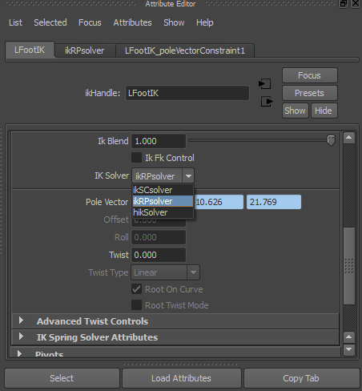
Let's drive this constraint with a Locator. This can be found under Create->Locator. A Locator is just a nil object that denotes a position. You should get a 3d crosshair. Now lets move this crosshair to the knee joint. If you hold v as you move your locator, you should be able to snap it easily to the exact position of the knee. Now just bring it forward right about here:
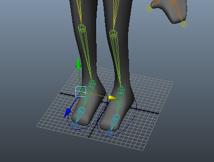 (You should put it far enough that your knee can never touch it)
What is that? We should Freeze Transform this locator? You're right! Let's do that right now.
Now to apply the constraint, select the locator and rename it to LKneeCtrl, and then select LFootIK (Remember, it's the driver then the driven for constraints always.) You don't need anything from the option box of Pole Vector constraint so just click Constraints->Pole Vector.
Now when you move your LKneeCtrl around, your knee will try to aim at it. This is how you would obtain finer controls for your knee. I know it's tedious, but now you can repeat for your right knee, left elbow, and right elbow. (For the elbows, you would place the locators behind the elbows as that's the natural way they bend.) Don't forget to freeze transformations! I actually forgot to do this while writing this lab, and had to redo all of this... T_T Never make that mistake.
All in all, it should look like this in the end:
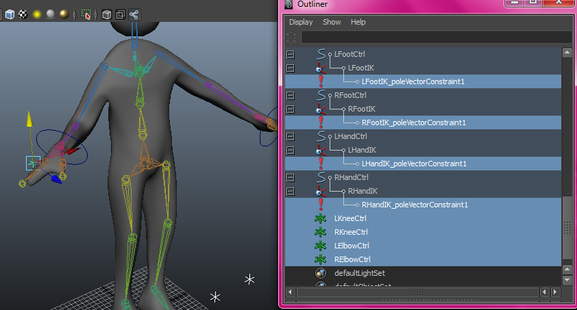
Now the knee actually moves as the foot IK moves. Therefore make sure you parent constraint the two (FootCtrl should drive the KneeCtrl. Remember that for constraints, you select the driver then the driven.). Do the same for your HandCtrl into ElbowCtrl.
Phew. That was a lot of new things learnt and done huh? Well, we're now nearing the end!
Master Controller and Cleanup
Remember the Master Controller from last lab? Well this is now the last step!
This is the last NURBS Circle we will create for this lab. Make it big enough on the ground so that it encapsulates the whole character and Freeze Transformation. Now parent all the controllers and the joints into the Master Controller.
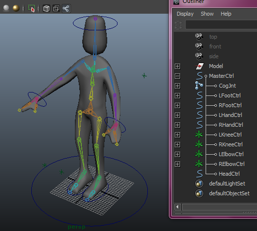
Doesn't it look all pretty and controllable now? Good job!
Now you can repeat the standard hide joints and locking we saw last lab, and other various work to hide our messy work.
The next part of rigging, which isn't going to be explicitly covered in class time, is skinning. You can find our tutorial for skinning right here: Skinning Lab.
Skinning will fix issues such as the picture below where things don't deform the way you want them to.
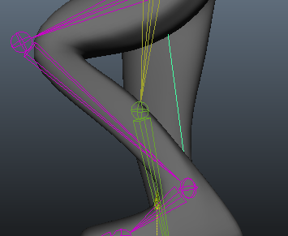
An awkward knee you've got there!?
If you're curious this is what I have at the end of the tutorial: Rigged Blobber
Extra for Experts
Spine Controllers
Now you have a basic bipedal rig. One thing missing in our rig though is the spine control. Think about how you would rig the spine! It will be done with a mix of orient constraints between controllers and joints, and then parenting of those controllers.